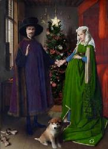

Если бы заказчики могли комментировать произведения искусства.
Известный художник-иллюстратор Фаворский, когда работал над иллюстрациями к книгам, всегда пририсовывал в уголке собачку. Когда редактор начинал возмущаться, зачем на рисунке изображена собачка, художник начинал с пеной у рта доказывать, что собачка на рисунке необходима. В итоге художник сдавался, собачку с изображения убирали и довольный редактор отдавал рисунок в печать. А когда художника спросили, зачем ты эту собаку везде рисуешь, он ответил: «Не было бы собаки, он бы к чему-нибудь другому придрался!..»
И мы в AdMe.ru решили представить ситуацию, когда известные произведения искусства, украшающие стены мировых музеев и частных коллекций, стали предметом комментариев со стороны современных заказчиков.
В целом нормально, пара важных поправок:
1. Грудь должна быть больше. Гораздо больше.
2. Цвет вот этой загогулины нам не нравится. Желательно сделать его салатовым, а если не получится — вообще убрать или заменить на кожаную портупею с пряжками. Разумеется, салатовую.
3. Эта фигня ни к селу ни к городу. Убрать ее вниз, между камышом и пальцем. И уменьшить.
4. Исправить выражение лица мужика на более рабочее. Такое впечатление, что он блюет, а не дует. Должно быть аналогичным девушке рядом, они одним делом заняты.
Нам очень понравился ваш вариант, он замечательный! Просто супер. Но переделайте. Ребят, ну мы же счастье должны нести людям, а не тоску! Поэтому все нужно развеселить.
1. Оранжевый в этом макете недостаточно позитивен. А зеленый выглядит недостаточно экологичным.
2. Собачка совершенно не милая, замените на Хатико что ли.
3. Нужно подумать над интерьером, он морально устарел. Если не знаете, чем вдохновиться, сходите в Икею.
4. Персонажи: почему мужик похож на Путина? это какой-то тренд? Пусть уж лучше будет Бред Пит, а женщина Анджелина Джоли, и пусть все будут счастливы.
Пару недель назад мы, студия дизайна "Инфографика" (www.infografika.in), эту статью. Мы ржали два дня не переставая. И у старшего дизайнера Анастасии родилась идея СДЕЛАТЬ ЭТИ ПРАВКИ! В перерывах между производством инфографики. Конечно, мы любим наших заказчиков, уважаем их, они у нас самые хорошие! Но хотим, чтобы заказчики дизайнеров всея Руси задумались, а не лучше ли иногда послушать дизайнера?..
По ссылке – смотрите, что получилось! http://vk.com/elupova?w=wall1051057_4635

Руководитель студии дизайна "Инфографика", Елупова Юлия.
Вы знаете, мы открыли ваш макет, и как-то не было такого, что «ах!». Мы, если честно, большего от вас ожидали.
1. Лошадь не по-доброму смотрит, поиграйте с её взглядом, он должен быть более мечтательным и выражать философию нашей компании. Сложно, но постарайтесь.
2. Девушка очень понравилась, хорошая находка, но переоденьте её в красное вечернее платье.
3. Вы рисовали с натуры? В следующий раз утверждайте пожалуйста с нами всех моделей.
4. Девочку на балконе замените на юношу, и в его глазах должен быть здоровый интерес.
5. Поменяйте лепнину на стене. Нам нужно что-то более авангардное.
Коллеги, мы понимаем, что сегодня сдавать макет в печать, но у нас все же есть небольшие правки:
1. Непонятная рука внизу слева как будто открывает банку пива. Убрать.
2. Текущий цвет фона нам не нравится, нужно что-то живенькое, попробуйте применить принты.
3. Взрослый бородатый мужик и скопление мальчиков вокруг него не пропустит цензура. Как-нибудь решите эту проблему.
4. Красная тряпка справа по форме напоминает ухо, исправьте. У нас и так слишком много анатомии в макете!
5. Мужик слева вышел отлично. Видно, что вы старались. Чтобы было ещё круче, давайте поменяем позу на более динамичную — пусть он будет в прыжке.
Ребята, круто, пять баллов! Прониклись до слез. Но есть два предложения:
1. А что, если этим чувакам только руки в "кадре" оставить?
2. И слоган тогда можно сменить на менее пафосный, например: Connecting people!
Искреннее спасибо за замечательный макет, но все-таки есть пара небольших комментариев:
1. Что это за мутант на руках у девушки? Заменить на милую собачку.
2. В образе девушки не хватает гламура, давайте черный фон заменим на розовый, грудь больше, а вырез платья глубже.
3. Если выводите на первый план ладонь, не забывайте покрыть лаком ногти. Сюда явно просится красный цвет!
4. Что-то не так со взглядом девушки, нет целеустремленности и убедительности. О, пусть она смотрит прямо! И пусть улыбается, как Мона Лиза! Так мы создадим загадку!
5. Аксессуары на шее у девушки уже не в моде в этом сезоне, поищите что-нибудь у Сваровски.
- мы понимаем, что вы очень известные и дорогие, но это полный пц!!! нам через десять минут сдавать макет в печать!!! никто не поймет, что мы рекламируем презервативы! пришлите адекватный вариант в течение пяти минут!!!
{kind=link}
{kind=link}
{kind=link}
{kind=link}
{kind=link}
{kind=link}
{kind=link}